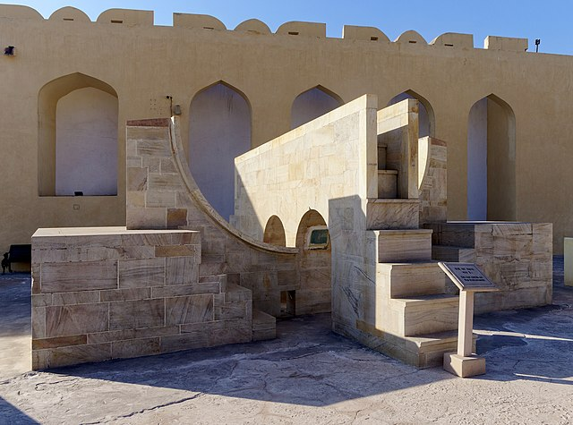
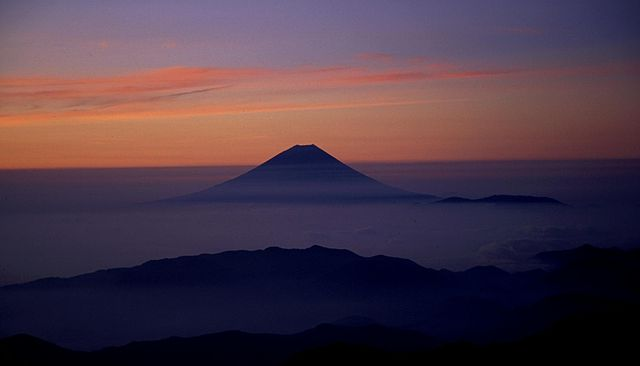

✪ For women, by women. ✪
ASIA
Asia, the world’s largest and most diverse continent. It occupies the eastern four-fifths of the giant Eurasian landmass. Asia covers a huge area of our planet Earth. So many natural wonders are found here – from the highest mountain in the world to the sunniest beaches in Maldives
India (47) THREE STARS
Jaipur (high risk)
Enjoy the local bazaars along with UNESCO World Heritage Sites such as the Jantar Mantar observatory and the Amer Fort or taste the lavish lifestyle while spending time at the City Palace. That being said, you should remain vigilant, as there is a high level of crime. Great place, but solo travel is not encouraged.
Japan (83) FIVE STARS
Japan’s Mt. Fuji is an active volcano about 100 kilometers southwest of Tokyo. Commonly called “Fuji-san,” it’s the country’s tallest peak, at 3,776 meters. A pilgrimage site for centuries, it’s considered one of Japan’s 3 sacred mountains, and summit hikes remain a popular activity.With the snow-capped view, Mount Fuji is beautiful – and somewhat artistic.
